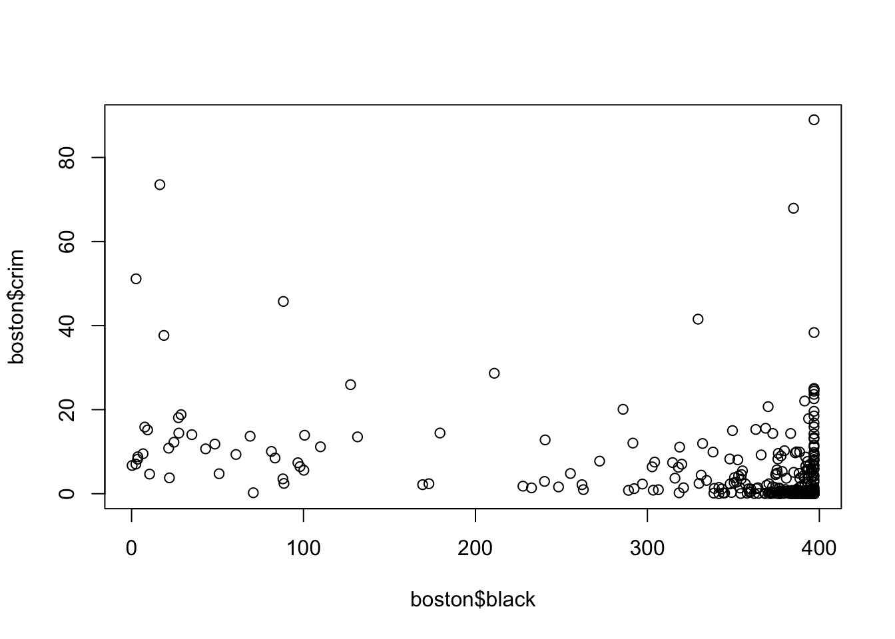
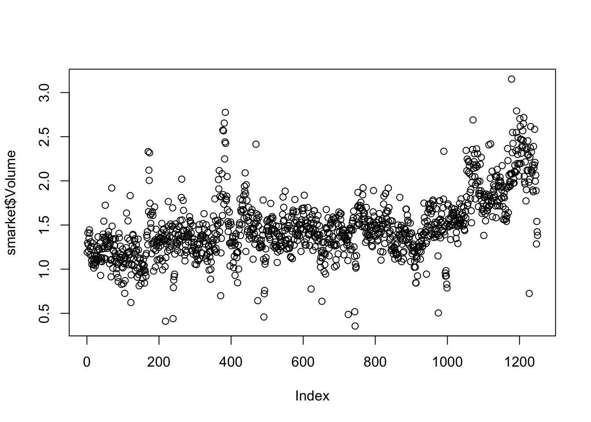
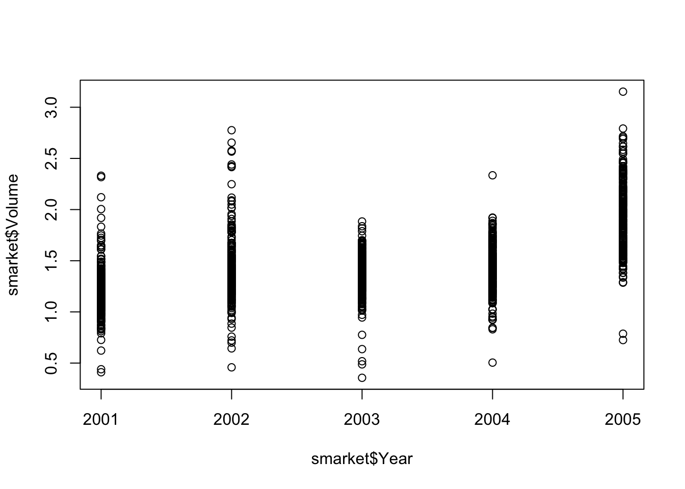

Classification, Inference. It looks like we are trying to evaluate the potential interactions between predictor factors (p=4, profit, number of employees, industree, CEO salary), of n = 500 observations, and are generating inferences related to CEO salary.
So do companies with higher number of employees make more money?
Classification, Prediction
Based on, n = 20, other products, five predictors (p=14, success/failure, price, marketing budget, +10) are used to determine if a product is a success or failture. While interactions between predictors may influence the result, the only thing they care about is if the next product will be a success or fail.
Regression. Prediction.
Weekly data (n=52) based on the (p=4) variables, the % change in USD/EURO, and % chance in the US, British, and German Markets. Goal is predicting future change in markets based on test data which is two quantitative variables lends itself to regression.
## get data
boston <- MASS::Boston## simplify vars
black <- boston$black
crim <- boston$crim## simple scatterplot to see potential non linear relationship.
plot(boston$black,boston$crim)
## simple linear model between variables crim and black
lm1 <- lm(crim~black)
lm1##
## Call:
## lm(formula = crim ~ black)
##
## Coefficients:
## (Intercept) black
## 16.55353 -0.03628summary(lm1)##
## Call:
## lm(formula = crim ~ black)
##
## Residuals:
## Min 1Q Median 3Q Max
## -13.756 -2.299 -2.095 -1.296 86.822
##
## Coefficients:
## Estimate Std. Error t value Pr(>|t|)
## (Intercept) 16.553529 1.425903 11.609 <2e-16 ***
## black -0.036280 0.003873 -9.367 <2e-16 ***
## ---
## Signif. codes: 0 '***' 0.001 '**' 0.01 '*' 0.05 '.' 0.1 ' ' 1
##
## Residual standard error: 7.946 on 504 degrees of freedom
## Multiple R-squared: 0.1483, Adjusted R-squared: 0.1466
## F-statistic: 87.74 on 1 and 504 DF, p-value: < 2.2e-16## R^2## The R-squared value
summary(lm1)$r.sq## [1] 0.1482742## The Root Mean Square Error (RMSE)
summary(lm1)$sigma## [1] 7.94615## add model squared predictor from var
black2 <- black * black
lm2 <- lm(crim~black + black2)
lm2##
## Call:
## lm(formula = crim ~ black + black2)
##
## Coefficients:
## (Intercept) black black2
## 1.742e+01 -5.186e-02 3.458e-05summary(lm2)##
## Call:
## lm(formula = crim ~ black + black2)
##
## Residuals:
## Min 1Q Median 3Q Max
## -13.696 -2.353 -2.202 -1.366 86.688
##
## Coefficients:
## Estimate Std. Error t value Pr(>|t|)
## (Intercept) 1.742e+01 1.843e+00 9.455 <2e-16 ***
## black -5.186e-02 2.125e-02 -2.440 0.015 *
## black2 3.458e-05 4.638e-05 0.745 0.456
## ---
## Signif. codes: 0 '***' 0.001 '**' 0.01 '*' 0.05 '.' 0.1 ' ' 1
##
## Residual standard error: 7.95 on 503 degrees of freedom
## Multiple R-squared: 0.1492, Adjusted R-squared: 0.1458
## F-statistic: 44.11 on 2 and 503 DF, p-value: < 2.2e-16## R^2
summary(lm2)$r.sq## [1] 0.1492143##RSME
summary(lm2)$sigma## [1] 7.949655## add model cubed predictor from var
black3 <- black2 * black
lm3 <- lm(crim~black + black2 + black3)
lm3##
## Call:
## lm(formula = crim ~ black + black2 + black3)
##
## Coefficients:
## (Intercept) black black2 black3
## 1.826e+01 -8.356e-02 2.137e-04 -2.652e-07summary(lm3)##
## Call:
## lm(formula = crim ~ black + black2 + black3)
##
## Residuals:
## Min 1Q Median 3Q Max
## -13.096 -2.343 -2.128 -1.439 86.790
##
## Coefficients:
## Estimate Std. Error t value Pr(>|t|)
## (Intercept) 1.826e+01 2.305e+00 7.924 1.5e-14 ***
## black -8.356e-02 5.633e-02 -1.483 0.139
## black2 2.137e-04 2.984e-04 0.716 0.474
## black3 -2.652e-07 4.364e-07 -0.608 0.544
## ---
## Signif. codes: 0 '***' 0.001 '**' 0.01 '*' 0.05 '.' 0.1 ' ' 1
##
## Residual standard error: 7.955 on 502 degrees of freedom
## Multiple R-squared: 0.1498, Adjusted R-squared: 0.1448
## F-statistic: 29.49 on 3 and 502 DF, p-value: < 2.2e-16## R^2
summary(lm3)$r.sq## [1] 0.1498398##RSME
summary(lm3)$sigma## [1] 7.954643For the model {crime~black} the R^2 is 0.1482 and RMSE is 7.94615 For the model {crime~black + black2} the R^2} is 0.1492 and RMSE is 7.949655 For the model {crime~black + black2 + black3} the R^2 is 0.1498 and RMSE is 7.954643
The R^2 value and RMSE is increasing with model complexity with the linear model being the lowest values, sugggesting there is no non-linear relationship between the variable black and crim.
The simple linear model fits best.
library(ISLR)## set variable from ISLR data set
smarket <-ISLR::Smarket
## Basic Dataset Information
## Inspect variable names
names(smarket)## [1] "Year" "Lag1" "Lag2" "Lag3" "Lag4" "Lag5"
## [7] "Volume" "Today" "Direction"## Inspect dimensions
dim(smarket)## [1] 1250 9## Summary Statistics?
summary(smarket)## Year Lag1 Lag2
## Min. :2001 Min. :-4.922000 Min. :-4.922000
## 1st Qu.:2002 1st Qu.:-0.639500 1st Qu.:-0.639500
## Median :2003 Median : 0.039000 Median : 0.039000
## Mean :2003 Mean : 0.003834 Mean : 0.003919
## 3rd Qu.:2004 3rd Qu.: 0.596750 3rd Qu.: 0.596750
## Max. :2005 Max. : 5.733000 Max. : 5.733000
## Lag3 Lag4 Lag5
## Min. :-4.922000 Min. :-4.922000 Min. :-4.92200
## 1st Qu.:-0.640000 1st Qu.:-0.640000 1st Qu.:-0.64000
## Median : 0.038500 Median : 0.038500 Median : 0.03850
## Mean : 0.001716 Mean : 0.001636 Mean : 0.00561
## 3rd Qu.: 0.596750 3rd Qu.: 0.596750 3rd Qu.: 0.59700
## Max. : 5.733000 Max. : 5.733000 Max. : 5.73300
## Volume Today Direction
## Min. :0.3561 Min. :-4.922000 Down:602
## 1st Qu.:1.2574 1st Qu.:-0.639500 Up :648
## Median :1.4229 Median : 0.038500
## Mean :1.4783 Mean : 0.003138
## 3rd Qu.:1.6417 3rd Qu.: 0.596750
## Max. :3.1525 Max. : 5.733000Summary information, 1250 observations of 9 variables related to stock market trading.
## Inspect correlations using cor()
## [,-9] removes direction column which is non-numeric
cor(smarket [,-9])## Year Lag1 Lag2 Lag3 Lag4
## Year 1.00000000 0.029699649 0.030596422 0.033194581 0.035688718
## Lag1 0.02969965 1.000000000 -0.026294328 -0.010803402 -0.002985911
## Lag2 0.03059642 -0.026294328 1.000000000 -0.025896670 -0.010853533
## Lag3 0.03319458 -0.010803402 -0.025896670 1.000000000 -0.024051036
## Lag4 0.03568872 -0.002985911 -0.010853533 -0.024051036 1.000000000
## Lag5 0.02978799 -0.005674606 -0.003557949 -0.018808338 -0.027083641
## Volume 0.53900647 0.040909908 -0.043383215 -0.041823686 -0.048414246
## Today 0.03009523 -0.026155045 -0.010250033 -0.002447647 -0.006899527
## Lag5 Volume Today
## Year 0.029787995 0.53900647 0.030095229
## Lag1 -0.005674606 0.04090991 -0.026155045
## Lag2 -0.003557949 -0.04338321 -0.010250033
## Lag3 -0.018808338 -0.04182369 -0.002447647
## Lag4 -0.027083641 -0.04841425 -0.006899527
## Lag5 1.000000000 -0.02200231 -0.034860083
## Volume -0.022002315 1.00000000 0.014591823
## Today -0.034860083 0.01459182 1.000000000Volume has the strongest correlation with year, lets plot it.
plot(smarket$Volume)
plot(smarket$Year,smarket$Volume)
Fitting a generalized linear model, glm()
glm.fits = glm(Direction~Lag1+Lag2+Lag3+Lag4+Lag5+Volume, data = smarket, family = binomial)
summary(glm.fits)##
## Call:
## glm(formula = Direction ~ Lag1 + Lag2 + Lag3 + Lag4 + Lag5 +
## Volume, family = binomial, data = smarket)
##
## Deviance Residuals:
## Min 1Q Median 3Q Max
## -1.446 -1.203 1.065 1.145 1.326
##
## Coefficients:
## Estimate Std. Error z value Pr(>|z|)
## (Intercept) -0.126000 0.240736 -0.523 0.601
## Lag1 -0.073074 0.050167 -1.457 0.145
## Lag2 -0.042301 0.050086 -0.845 0.398
## Lag3 0.011085 0.049939 0.222 0.824
## Lag4 0.009359 0.049974 0.187 0.851
## Lag5 0.010313 0.049511 0.208 0.835
## Volume 0.135441 0.158360 0.855 0.392
##
## (Dispersion parameter for binomial family taken to be 1)
##
## Null deviance: 1731.2 on 1249 degrees of freedom
## Residual deviance: 1727.6 on 1243 degrees of freedom
## AIC: 1741.6
##
## Number of Fisher Scoring iterations: 3Assess coefficients for the fitted model.
coef(glm.fits)## (Intercept) Lag1 Lag2 Lag3 Lag4
## -0.126000257 -0.073073746 -0.042301344 0.011085108 0.009358938
## Lag5 Volume
## 0.010313068 0.135440659summary(glm.fits)$coef## Estimate Std. Error z value Pr(>|z|)
## (Intercept) -0.126000257 0.24073574 -0.5233966 0.6006983
## Lag1 -0.073073746 0.05016739 -1.4565986 0.1452272
## Lag2 -0.042301344 0.05008605 -0.8445733 0.3983491
## Lag3 0.011085108 0.04993854 0.2219750 0.8243333
## Lag4 0.009358938 0.04997413 0.1872757 0.8514445
## Lag5 0.010313068 0.04951146 0.2082966 0.8349974
## Volume 0.135440659 0.15835970 0.8552723 0.3924004summary(glm.fits)$coef[,4]## (Intercept) Lag1 Lag2 Lag3 Lag4 Lag5
## 0.6006983 0.1452272 0.3983491 0.8243333 0.8514445 0.8349974
## Volume
## 0.3924004Predict probability that the market will go up.
glm.probs=predict(glm.fits,type="response")
glm.probs[1:10]## 1 2 3 4 5 6 7
## 0.5070841 0.4814679 0.4811388 0.5152224 0.5107812 0.5069565 0.4926509
## 8 9 10
## 0.5092292 0.5176135 0.4888378contrasts(smarket$Direction)## Up
## Down 0
## Up 1Convert predicted probabilities into class labels create a vector of predictions based on probabilities
glm.pred=rep("Down",1250)
glm.pred[glm.probs>.5]="Up"Create table to display prediction results against test data
table(glm.pred, smarket$Direction)##
## glm.pred Down Up
## Down 145 141
## Up 457 507mean(glm.pred==smarket$Direction)## [1] 0.5216100 - 52.2 = 47.8% = Training Error Rate, often times overly optimistic and under estimates test error rate.
Lets build a model using training sets.
train=(smarket$Year<2005)
smarket.2005 = smarket[!train,]
dim(smarket.2005)## [1] 252 9direction.2005 = smarket$Direction[!train]Hmm… Complicated explanation.
glm.fits1 = glm(Direction~Lag1+Lag2+Lag3+Lag4+Lag5+Volume, data = smarket, family = binomial, subset=train)
glm.probs1 = predict(glm.fits1, smarket.2005,type="response")glm.fits1 and glm.prob1 are trained and tested on different subsets of data, ie does 2001-2004 data help predict 2005 ?
glm.pred1=rep("Down",252)
glm.pred1[glm.probs1>.5]="Up"
table(glm.pred1, direction.2005)## direction.2005
## glm.pred1 Down Up
## Down 77 97
## Up 34 44mean(glm.pred1==direction.2005)## [1] 0.4801587mean(glm.pred1!=direction.2005)## [1] 0.5198413test error rate is 52%
Now fitting model with just lag1 and lag2, maybe it will improve error.
glm.fits2 = glm(Direction~Lag1+Lag2, data = smarket, family = binomial, subset=train)
glm.probs2 = predict(glm.fits2, smarket.2005,type="response")
glm.pred2=rep("Down",252)
glm.pred2[glm.probs2>.5]="Up"
table(glm.pred2, direction.2005)## direction.2005
## glm.pred2 Down Up
## Down 35 35
## Up 76 106mean(glm.pred2==direction.2005)## [1] 0.5595238mean(glm.pred2!=direction.2005)## [1] 0.4404762Improved prediction rate of 56% accuracy rate, also when predicting up, is 58% accurate. Model is more accurate when predicting UP vs DOWN
## Make a prediction using specific variable inputs.
predict(glm.fits2, newdata=data.frame(Lag1=c(1.2,1.5),Lag2=c(1.1,-0.8)),type="response")## 1 2
## 0.4791462 0.4960939Create new model
library(MASS)## Warning: package 'MASS' was built under R version 3.5.2##
## Attaching package: 'MASS'## The following object is masked from 'package:dplyr':
##
## selectlda.fit=lda(Direction~Lag1+Lag2, data=smarket, subset=train)
lda.fit## Call:
## lda(Direction ~ Lag1 + Lag2, data = smarket, subset = train)
##
## Prior probabilities of groups:
## Down Up
## 0.491984 0.508016
##
## Group means:
## Lag1 Lag2
## Down 0.04279022 0.03389409
## Up -0.03954635 -0.03132544
##
## Coefficients of linear discriminants:
## LD1
## Lag1 -0.6420190
## Lag2 -0.5135293call predict with model
lda.pred=predict(lda.fit, smarket.2005)
names(lda.pred)## [1] "class" "posterior" "x"lda.class=lda.pred$class
table(lda.class,direction.2005)## direction.2005
## lda.class Down Up
## Down 35 35
## Up 76 106mean(lda.class==direction.2005)## [1] 0.5595238Apply 50% threshold (Bayseian ideal??)
sum(lda.pred$posterior[,1]>=.5)## [1] 70sum(lda.pred$posterior[,1]<.5)## [1] 182Probability is that the market sill decrease.
lda.pred$posterior[1:20,1]## 999 1000 1001 1002 1003 1004 1005
## 0.4901792 0.4792185 0.4668185 0.4740011 0.4927877 0.4938562 0.4951016
## 1006 1007 1008 1009 1010 1011 1012
## 0.4872861 0.4907013 0.4844026 0.4906963 0.5119988 0.4895152 0.4706761
## 1013 1014 1015 1016 1017 1018
## 0.4744593 0.4799583 0.4935775 0.5030894 0.4978806 0.4886331lda.class[1:20]## [1] Up Up Up Up Up Up Up Up Up Up Up Down Up Up
## [15] Up Up Up Down Up Up
## Levels: Down UpApplying a higher threshold.
sum(lda.pred$posterior[,1]>.9)## [1] 0Fit a QDA model to the smarket data
qda.fit = qda(Direction~Lag1+Lag2, data=smarket, subset=train)
qda.fit## Call:
## qda(Direction ~ Lag1 + Lag2, data = smarket, subset = train)
##
## Prior probabilities of groups:
## Down Up
## 0.491984 0.508016
##
## Group means:
## Lag1 Lag2
## Down 0.04279022 0.03389409
## Up -0.03954635 -0.03132544predict class with qda
qda.class = predict(qda.fit, smarket.2005)$class
table(qda.class, direction.2005)## direction.2005
## qda.class Down Up
## Down 30 20
## Up 81 121mean(qda.class == direction.2005)## [1] 0.5992063KNN requires 4 inputs: train.X, test.X, train.Direction, and a value for K, the number of nearest neighbors.
train.X and test.X are matrices, requires binding lag 1 and lag 2 together.
library(class)## Warning: package 'class' was built under R version 3.5.2train.X = cbind(smarket$Lag1,smarket$Lag2)[train,]
test.X = cbind(smarket$Lag1,smarket$Lag2)[!train,]
train.Direction = smarket$Direction[train]Set a random seed and apply knn prediction.
set.seed(1)
knn.pred = knn(train.X, test.X, train.Direction,k=1)
table(knn.pred, direction.2005)## direction.2005
## knn.pred Down Up
## Down 43 58
## Up 68 83K = 1 is only 50% accurate.
Increase with K=3.
set.seed(1)
knn.pred2 = knn(train.X, test.X, train.Direction,k=3)
table(knn.pred2, direction.2005)## direction.2005
## knn.pred2 Down Up
## Down 48 55
## Up 63 86mean(knn.pred2 == direction.2005)## [1] 0.531746OK,accuracy imrpoved to 53% lets keep increasing K to 5
set.seed(1)
knn.pred3 = knn(train.X, test.X, train.Direction,k=5)
table(knn.pred3, direction.2005)## direction.2005
## knn.pred3 Down Up
## Down 40 59
## Up 71 82mean(knn.pred3 == direction.2005)## [1] 0.484127Ohh nooo!! 48% It loses prediction accuracy, does this suggest overfitting? with k = 5.
Copyright © 2019 Irfcorp, Inc. All rights reserved.